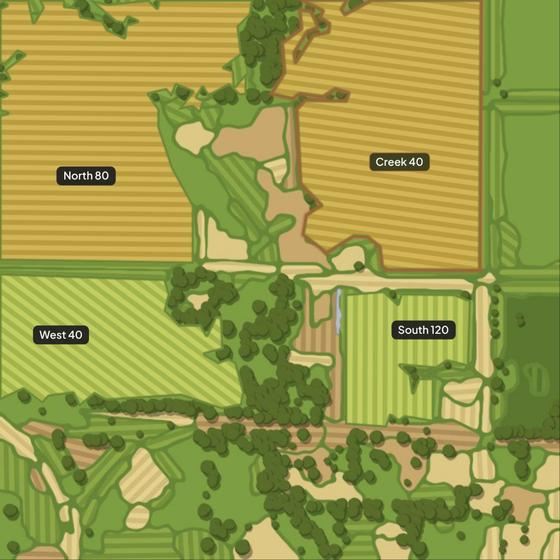
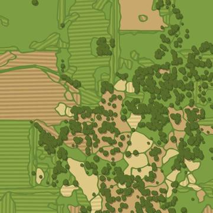
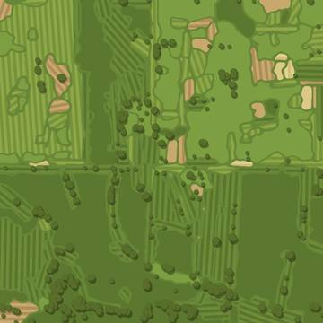
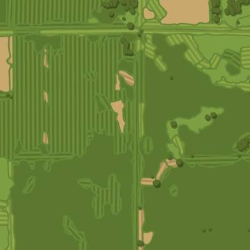
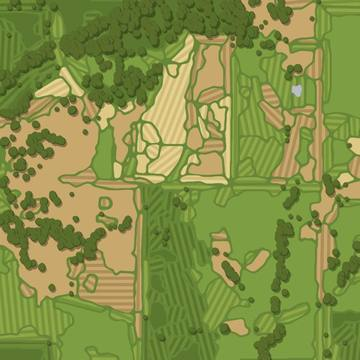
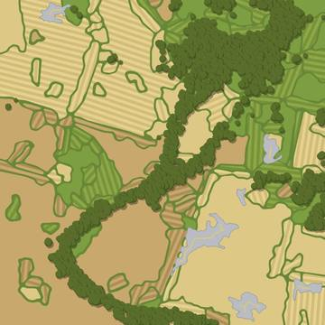

Fig 0.1 · Input
Describe Your Farm
13 short questions geolocate the farm and record its four fields, last crops, irrigation, soil drainage, limits and goals. Every question can be skipped, or start with the example farm.
Plan next season's crops on your own fields.
Built on 44 seasons of NASA weather.
The Problem
Farmers have no way to test a crop rotation before they plant it. The plan is chosen months ahead, on habit and rules of thumb, before anyone knows the weather. A wrong choice only shows at harvest: in the 2012 drought, Iowa's corn harvest fell to 77% of its normal trend.
Crop rotation: growing different crops on the same field in planned turns, such as corn one year and soybeans the next, to keep the soil fertile and break pest and disease cycles.
Our Solution
EcoShift is a crop rotation testing system. It replays 44 seasons of NASA satellite-derived weather through a process-based crop simulation (FAO-56 soil water balance and growing degree days) on the farmer's own fields. A multi-agent system then compares every rotation and recommends the plan with the best balance of yield, profit and risk.
Learn More About The Technical DetailsHow It Works, Step By Step
Fig 0.1 · Input
13 short questions geolocate the farm and record its four fields, last crops, irrigation, soil drainage, limits and goals. Every question can be skipped, or start with the example farm.
Fig 0.2 · Data
For that exact point, the farm-fit agent pulls the data sets: 44 seasons of NASA POWER daily weather, the USDA soil survey (water-holding capacity, drainage) and county harvest records.
Satellites behind the data: NASA Terra (MODIS greenness), NASA CERES (sunlight, inside NASA POWER) and Copernicus Sentinel-2 (farm images).
See Every Data SetFig 0.3 · Decision
The adviser agent sets each field's current plan against the alternatives (corn, soybeans, a rye cover crop, oats) and ranks them by expected return and downside risk, with the evidence, extra work and information gaps for each.
Fig 0.4 · Simulation
A process-based crop model (FAO-56 soil water balance, growing degree days, frost and heat stress) replays each plan through a 44-season historical weather ensemble, 1982 to 2025, in harvest and in dollars, and flags the seasons well above or below the farm's usual yield.
The Project
How we built it, and how well it holds up. The farm drawn from real aerial photos, one farm through 44 summers, the NASA data behind every number, a check from NASA satellites, and the honest limits.
Project Details
The farm art, the NASA data, the model and how well it holds up, in detail.
From A Photo To A Living Farm
The farm you see is drawn from a real aerial photo. The team's converter turns a USDA photo into a flat illustrated map: fields, crop rows, trees, roads and water. EcoShift finds the four fields on it, then paints 44 seasons of NASA weather onto them, week by week.
Drag the divider, or use the left and right arrow keys. On the left is the real photo. On the right is the map the converter draws from it.
The example farm is in Story County, Iowa, 1.6 km on a side. Photo: USDA NAIP via USGS, public domain. Map: drawn by the team's converter.
The same farm through one growing season, as the simulation paints it. Crops grow, turn gold and are harvested. Dry spells, waterlogging, frost and heat show on the fields.




Frames are captured from the simulator's farm view for the example farm in a typical year (2011 weather).
Each is a ready starting farm with its own 44 seasons of NASA weather, USDA soils and county harvests. Pick one to open it in the simulator; a farmer's own address starts from the nearest of these.










Each map is drawn automatically from public USDA aerial photos; the four fields the simulation uses are found by image processing.
One Farm, 44 Summers
Same farm, three very different summers. This is the example farm near Story County, Iowa: 280 acres in four fields. North 80 and Creek 40 are soybeans. West 40 and South 120 are corn.
99%
of a normal crop in a typical year (2011 weather). The farm earns about $13,700.
79%
in a 2012-style drought. The farm loses about $37,000 after costs.
77%
in 1988, the worst of the 44 seasons. The farm loses about $44,000 after costs.
The corn takes the hit. In 2012 South 120 falls to 69% of a normal crop, while the soybeans hold at 87 to 88%. In 1988 South 120 falls to 64%.
Which option held up best in the worst seasons? On the two soybean fields, keeping soybeans: every other plan tried did worse. On the corn fields, soybeans after soybeans did a little better in bad years, but it earns less on average, and the gap is too close to call.
These are the example farm's numbers from the simulator, not a real farmer's. Costs and prices are Iowa State budgets, rounded. Run it yourself in the Simulation tab.
How It Works
Two lanes that meet on the farm map. One lane makes the numbers. The other makes the picture. The numbers decide how each field looks every week.
Lane 1 The Numbers
Lane 2 The Picture
Where They Meet The weekly numbers from Lane 1 colour the fields from Lane 2.
Every number comes from the data and the model. AI never makes up a result.
Inside EcoShift
A team of helpers, each with one job. EcoShift is designed like a small multi-agent system: each helper does one job and hands its result to the next. Two of them use an AI model, and code checks and limits everything they return.
Plain Code
QuestionnaireLearns the farm: where it is, its four fields, last crops, water, land, limits and what matters most.AI · Google Gemini
Farm-Fit HelperReads the farmer's answers about drainage, tiles and slope and proposes soil adjustments. Code caps every change, and it switches off without a key.Plain Code · NASA Data
Crop ModelReplays 44 seasons of NASA POWER weather on each field: soil water, growth stages, frost, heat, harvest.Plain Code
AdviserCompares every option on every field and gives each one its evidence, extra work, information gaps and what to check with an adviser.Plain Code
Chat AssistantTurns plain-English what-ifs ("what if 2012 happens again?") into simulator actions, runs them and answers in plain words.AI · Google Gemini
Outlook ExplainerTurns the 30-day forecast numbers into a short note for the farmer.Image Processing
Map MakerDraws the farm from aerial photos and finds the four fields the simulation is painted on.AI on a short leash. Every harvest and dollar figure comes from NASA and USDA data and the crop model. The AI helpers only adjust soil settings within fixed limits and write notes; without a key, EcoShift works the same, minus those two.
The Data Behind EcoShift
The weather is NASA's. Every past season is NASA POWER daily weather, 1982 to 2025, for the grid cell (about 0.5 degrees, roughly 50 km) around the farm. Everything else is listed below, with what it is used for.
NASA POWER daily weather, 1982 to 2025, is the core of the model: without it there is nothing to replay. NASA MODIS satellite greenness checks the model against what really grew.
| NASA Dataset | What It Is | What The Model Does With It |
|---|---|---|
| T2M_MAX, T2M_MIN | Daily highest and lowest air temperature | Crop growth and heat stress, planting dates, killing frost in spring and fall |
| PRECTOTCORR | Daily rain, corrected | Fills the soil water bucket, so dry spells and wet spells show up |
| ALLSKY_SFC_SW_DWN | Sunlight reaching the ground | Drives how much water the crop uses (missing before 1984, then a temperature-only estimate is used) |
| T2MDEW, WS2M | Dew point and wind at 2 m | With sunlight and temperature, give the daily water use of the crop (FAO-56 Penman-Monteith) |
| GWETROOT | Modelled root-zone soil wetness (MERRA-2, not satellite SMAP) | Used only to check the model against real harvests, not in the farm results |
| MODIS NDVI (Terra, 16-Day, 250 m) | Satellite greenness of Story County cropland, 2000 to 2025, from NASA GIBS | Checks the model against what really grew (see "Checked from space" below), not used in the farm results |
Not from NASA. Each one fills a gap the weather cannot: the ground, the real harvests, money, the next 30 days and the map.
| Dataset | From | What EcoShift Uses It For |
|---|---|---|
| Soil Survey (Soil Data Access) | USDA NRCS | How much water each field's soil holds, how well it drains, its slope. Sets the size of the soil water bucket. |
| County And State Yields (Quick Stats) | USDA NASS | The farm's normal harvest, and the check of the model against real Iowa harvests, 1982 to 2025 |
| Weather Archive (ERA5) And 30-Day Forecast | Open-Meteo | Cross-checks NASA's hot days and crop water use; the forecast powers the 30-day outlook |
| Weather Stations (GHCN-Daily) | NOAA | Checked NASA's frost nights against three stations near Ames, Iowa |
| Crop Budgets, Prices, Cost-Share | Iowa State University, USDA WASDE, Iowa Dept. of Agriculture | Costs per acre, crop prices and the cover-crop payment, for the dollar results |
| Aerial Photos | USDA NAIP via USGS (Sentinel-2 by EOX where sharper) | Drawn into the illustrated farm map the simulation plays on. Not used in any number. |
| SoilGrids | ISRIC | Soils for farms outside the United States |
| Address And County Lookup | Photon (OpenStreetMap), US Census, FCC | Finding the farm and its county from an address |
NASA's Terra satellite measures how green the cropland is every 16 days. We compared the peak summer greenness of Story County, 2000 to 2025, with the real harvests and with our model.

0.61
The satellite agrees with the real harvest: correlation with Story County corn yields, 26 seasons.
0.37
Our model agrees with the satellite only weakly. Leave out 2012 and it drops to about 0.15.
2012
All three see the drought. The satellite saw the crop peak early, on 11 July, and fade fast in August.
Plainly: the satellite backs up what our yield check found. EcoShift catches the big droughts, not the small swings of ordinary years. County-wide, 250 m pixels, from NASA GIBS (MODIS_Terra_L3_NDVI_16Day); the farm's own fields are too small to check this way.
Why Satellites Check The Model Instead Of Running It
Why It Is Credible
Every past season is NASA weather. EcoShift replays NASA POWER, the agency's public daily weather record, adjusted to the farm's own location. The soils and normal harvests come from the USDA; only the field layout on the map is illustrative.
44
Real seasons of NASA daily weather, 1982 to 2025, replayed on the farm's fields.
2
Major droughts, 1988 and 2012, that the model picks out when checked against 44 years of USDA harvests in Story County, Iowa.
30
Days of forecast for the farm, with warnings for frost, heat, dry spells and heavy rain.
How Well Does It Work?
Not As Well As A Forecast Would. Here Is The Honest Answer.
Who It Is For And How It Grows
EcoShift is for farmers who want to test a rotation before planting. It works at any point in the US Corn Belt, from 14 ready counties, with the farmer's own location fitted from NASA climate. Only Story County, Iowa has been checked against real harvests. The other 13 counties use the same method but are not checked yet. Next steps are checking more counties and adding NASA satellite soil moisture.
Honest Limits
Its weather and soil data cover 14 Corn Belt counties and are adjusted to the farm's own point; NASA POWER's grid is about 50 km wide, so a farm near its county gets little correction. Outside the United States, soils come from ISRIC SoilGrids and harvests are a Corn Belt yardstick. The 30-day forecast comes from Open-Meteo, not NASA, and days 17 to 30 are a rough estimate. EcoShift is a working prototype: fitting to the farm, the forecast and the AI notes need its server.
Source NASA POWERLoading the simulator…
The three students who built EcoShift
for the 2026 NASA Space Apps Challenge.
Who We Are
We built EcoShift for farmers who have to choose before the weather does, and who deserve to see the evidence for themselves.
The Team
10Th Grade · Emerald High School
Wants to become an AI engineer and a mechanical engineer, building machines that can sense, think and move on their own.
10Th Grade · Emerald High School
Plans a future in mechanical engineering and artificial intelligence: designing real machines and the smart software that drives them.
11Th Grade · Dougherty Valley High School
Is heading toward AI and mechanical engineering, where code meets hardware, to build technology that solves real problems out in the field.
EcoShift answers "Field Shift: Adapting Farms with NASA Data", a challenge in the 2026 NASA Space Apps Challenge.
The challenge asks for a decision-support tool that combines NASA Earth observations with local soil information, crop characteristics and farmer priorities, so farmers can explore rotations that strengthen soil health and adapt to changing conditions. It asks for a tool that supports farmer judgment and local expertise, and never replaces them.
Read The ChallengeData Credits